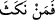

Ekrem (s.a.)’in eliyle diğerlerinin eli, hükümdarla teb’anın eli gibidir. “Allah’ın eli
onların ellerinin üzerindedir” ifâdesi, cem’, mertebesinin kesinlikle hasıl olduğunun
açıkça söylenmesinden başka bir şey değildir. Hâsılı, Allah Teâlâ Hz. Peygamber
(s.a.)’i kemâl sıfatlarının mazharı, tecellîlerinin aynası kılmıştır. Bu sebeple Efendimiz
(s.a.) şöyle buyurmuştur: “Kim beni görürse Hakkı görmüş olur.”[103] Rasûlullah (s.a.),
zâtından, sıfatlarından ve fiillerinden fânî olunca, Allah’ın zâtı, sıfatları ve fiilleri
konusunda nâibi durumuna gelmiştir. Hz. Peygamber (s.a.), O’nun nâibidir, onun eli
Allah’ın elidir. Bu mertebede Hallâc: “Ene’l-hakk”, “Ben Hakk’ım” demiştir. Bayezid
ise: “Sübhânî sübhânî..”, “Kendimi tenzih ederim, şânım ne yücedir” demiştir. Ebû
Saîd Harrâz da: “Şu cübbede Allah’tan başka birşey yok” demiştir.[104]
Vâsıtî der ki: Allah Teâlâ bu âyet-i kerîme ile, nebîsindeki beşeriyyet özelliğinin
geçici ve izâfî olduğunu, hakikî olmadığını haber veriyor. Yâni O (s.a.)’nun zâhiri
mahlûktur, ama bâtını hakktır. Bu sebeple O (s.a.)’nun, zâhirine değil de bâtınına secde
etmek câizdir. Çünkü zâhiri sınırlı âlem’den, bâtını ise sınırsız âlemdendir. Cenazelere
namaz kılmak câiz olursa, diriler hakkında secdeye ne dersin? anlamaya çalış.
Cenazeler üzerine namaz kılmanın câiz oluşu, o cenazelerin, her şeyi câmi, bünyesinde
bulunduran küllî Muhammedî hakikatten bünyelerinde bir hissenin mevcûdiyetindendir.
“” “Kim ahdini bozarsa”, “nekese” kelimesi “bozmak, koparmak” anlamına
gelir. Meselâ ipi veya halatı koparmak gibi. Ahdi bozmak mânâsına bir benzetmedir.
Kim ahdini ve bey’atını bozar, gereklerini, hükümleri yok sayarsa, “ancak kendi
aleyhine bozmuş olur.” “bu hareketinin zararını kendisi çeker.” Çünkü ahdi bozan
başkası değil, kendisidir.
“Kim verdiği söze sâdık kalır ve o hal üzere sebat ederse, Allah O’na büyük bir
mükâfat verecektir.” Cennetini, kendi rızâsını ve cemalini müşâhede etmeyi nasib
edecektir.
Ahdin bozulmasıyla kasdedilen, başlangıçta bey’at etmemek olabileceği gibi, bey’at
ettikten sonra bozmak da olabilir. Yâni ikisinin de kasdedilmesi ihtimali var. Nitekim
Câbir (r.a.)’den şöyle rivâyet edilmiştir: “Biz rıdvân bey’atı sırasında, ağacın altında
kesinlikle kaçmamak ve ölmek üzere, Rasûlullah (s.a.)’a bey’at ettik. Cedd bin Kays
hariç hiç birimiz bey’attan geri kalmadı. Fakat o münâfıktı ve devesinin hevdecinin
altına saklandı. Herkes bey’at etmek üzere çağırıldığı zaman insanlarla beraber icâbet
etmedi.
Muvazzah’ta şöyle gelmiştir: “Üç şey vardır ki, onu yapana/sahibine geri döner.
Birincisi hiledir. Bunun için; “Hâlbuki kötü tuzak, sadece hazırlayanın ayağına
dolanır” (Fâtır, 35/43) buyrulmuştur. İkincisi zulüm ve taşkınlıktır, bu sebeple Allah;
“Sizin taşkınlığınız ancak kendi aleyhinizedir” (Yûnus, 10/23) buyurmuştur.
Üçüncüsü verdiği sözde durmamaktır. Bu sebeple de; “Kim ahdini bozarsa, ancak
kendi aleyhine bozmuş olur” (Fetih, 48/10) gelmiştir. Söz vermek konusunda şöyle
demişlerdir; ahdini bozma, zira kim ahdini bozarsa zayıflar ve elindekileri kaybeder.